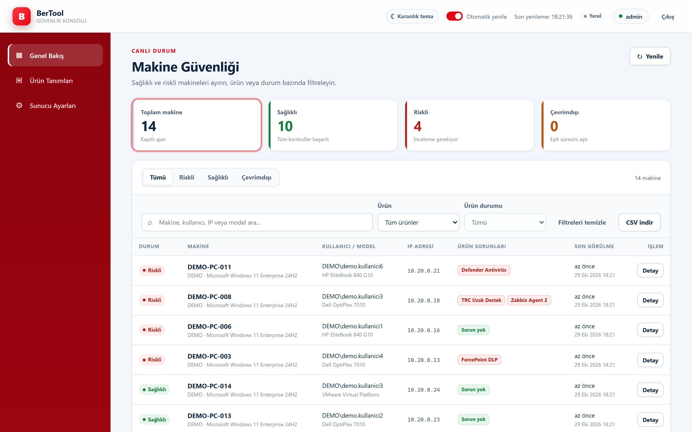
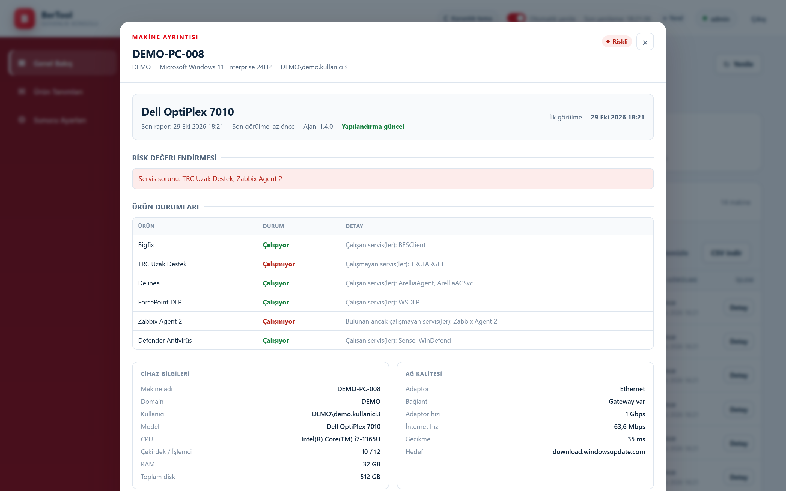
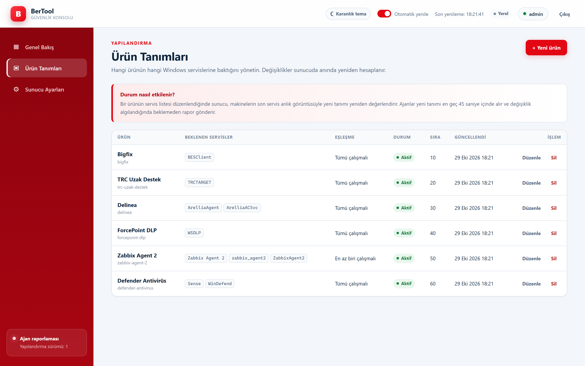
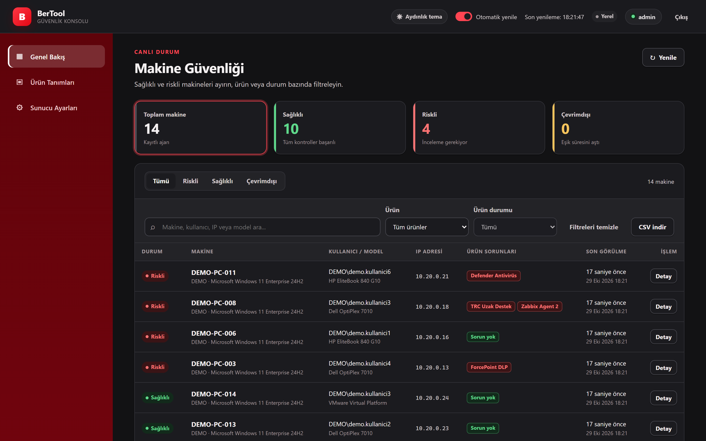
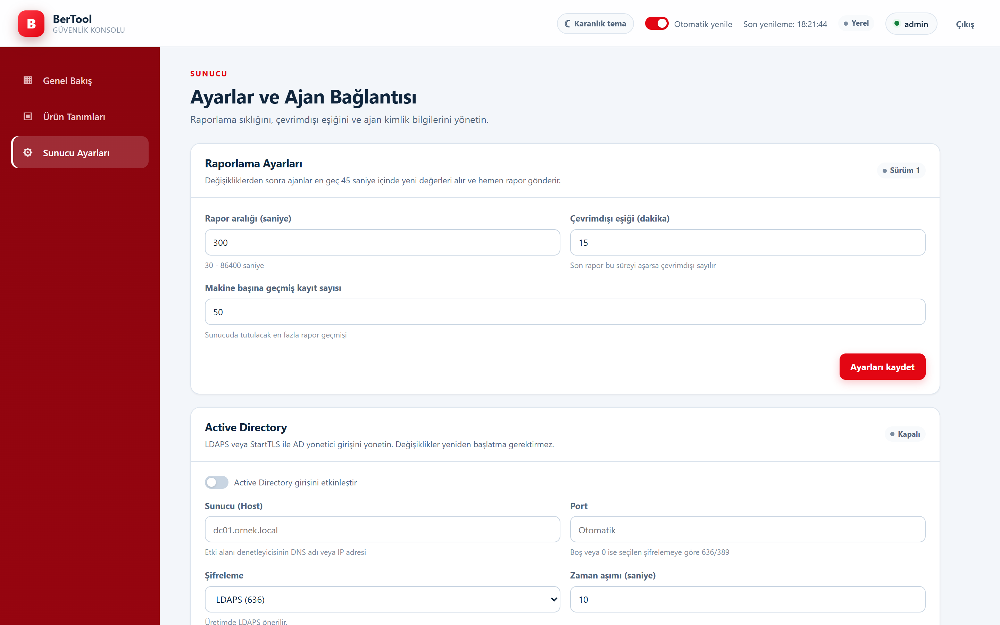
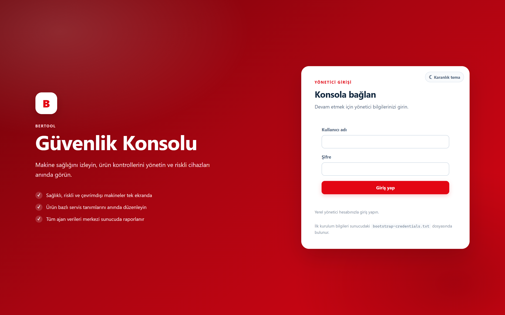

Ürün bazlı servis kontrolü
Bigfix, Delinea, DLP, Zabbix, Defender gibi ürünlerin hangi servislere baktığını konsoldan tanımlayın. Değişiklik mevcut raporlara anında uygulanır.
Sürüm 1.4.0 · Windows x64
BerTool, Windows bilgisayarlardaki güvenlik ajanlarını, servisleri ve BitLocker şifrelemesini izler. Tray ajanı durumu kullanıcıya gösterir, merkezi konsol tüm filoyu sağlıklı, riskli ve çevrimdışı olarak ayırır.

Ne yapar?
Bigfix, Delinea, DLP, Zabbix, Defender gibi ürünlerin hangi servislere baktığını konsoldan tanımlayın. Değişiklik mevcut raporlara anında uygulanır.
Tüm sabit disklerde yalnızca XTS-AES-256 sağlıklı kabul edilir. Risk sunucuda yeniden hesaplanır; ajanın beyanına güvenilmez.
Yeşil veya kırmızı simge, 45 saniyede bir yenilenen cihaz, ağ ve servis bilgileri. Kullanıcı ne olduğunu tek tıkla görür.
Arama, ürün ve durum filtreleri, makine detayı, rapor geçmişi ve Excel uyumlu CSV dışa aktarma. Açık ve koyu tema.
LDAPS veya StartTLS ile yönetici grubu doğrulaması, iç içe grup desteği ve AD kesintisinde yerel yedek giriş.
Uzak bağlantıda HTTPS zorunlu, PBKDF2 şifre özeti, özetlenmiş ajan anahtarı, DPAPI ile korunan anahtarlar ve sıkı güvenlik başlıkları.
Güncel tasarım





Kurulum
Her iki kurulum da self-contained'dir; hedef makinede .NET gerekmez. Programlar ve Özellikler'de yayıncı Berkay Atağ olarak görünür.
BerTool.Server.Setup-1.4.0.exe dosyasını çift tıklayın, Kur'a basın. Konsol açılır; ilk giriş bilgileri bitiş ekranından görüntülenebilir.
Konsolda Sunucu Ayarları → Ajan API Anahtarı bölümünden anahtarı üretin veya ilk kurulum dosyasındaki anahtarı kullanın.
BerTool.Client.Setup-1.4.0.exe /VERYSILENT /SERVERURL="https://sunucu" /APIKEY="…" ile sessiz kurun ya da çift tıklayıp yerel modda çalıştırın.
Sunucu ve istemci için ayrı Windows x64 kurulum dosyaları, SHA-256 özetleriyle.
Kurulum dosyaları Authenticode ile imzalı değildir; SmartScreen uyarısında "Ek bilgi → Yine de çalıştır" seçin. Kurum dağıtımında kendi kod imzalama sertifikanızı kullanın.